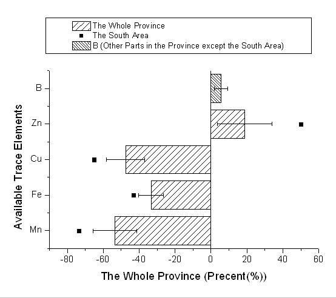
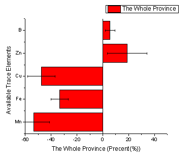
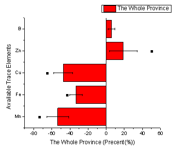
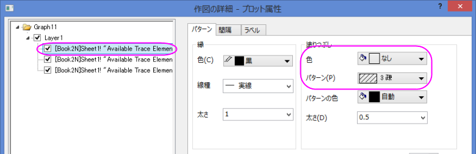
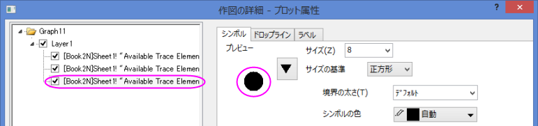
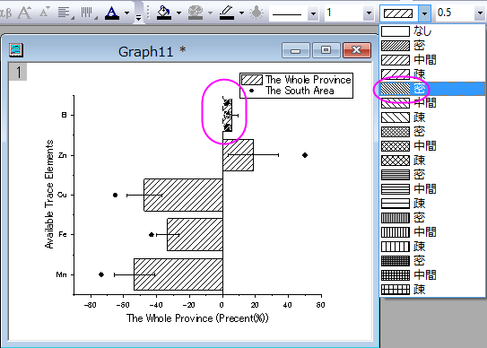

エラーバー付きの棒グラフと散布図
Bar-Scatter-ErrBar
サマリー
下のグラフは、棒グラフと散布図を組み合わせて作成しています。
- 
必要なOriginのバージョン:Origin 8.0 SR0
学習する項目
- 棒グラフに散布図を追加する方法
- 正負のエラーバーを設定する方法
ステップ
このチュートリアルは、チュートリアルデータプロジェクト<Origin EXE フォルダ>\Samples\TutorialData.opjと関連しています。
- チュートリアルデータプロジェクトを開き、プロジェクトエクスプローラで、Bar Plot with Errorsフォルダを開きます。
- ワークブックBook2Nをアクティブにして列Cで右クリックし、コンテキストメニューから列XY属性の設定：Yエラーバーを選択します。
- 列A、B、Cを選択し、メインメニューから作図：棒、円、面積：棒グラフと選択してYエラーバー付きの棒グラフを作成します。

- グラフウィンドウをアクティブにして、グラフ操作：X軸とY軸の交換を選択します。
- 
- 一度ワークシートに戻り、列Dを選択してからグラフウィンドウを最アクティブ化します。メニューから「挿入：プロットをレイヤに追加：散布図」と操作し、列Dの内容を散布図として棒グラフに追加します。
- 
- 棒グラフをダブルクリックして、「作図の詳細」ダイアログを開きます。パターンタブ内の塗りつぶしグループで色とパターンのオプションを下図のように設定します。
- 
- 左側パネルで散布図を選択し、下図のようにシンボルを設定します。OKボタンをクリックして、ダイアログを閉じます。
- 
- グラフウィンドウをアクティブにし、最初の横棒をCtrlキーを押しながらクリックし、スタイルツールバーからパターンとして密を選びます。
- 
- グラフの凡例を削除し、メインメニューから「グラフ操作：凡例：新規の凡例」 と選択して新規凡例を追加します。
- 凡例を右クリックし、コンテキストメニューからオブジェクトの表示属性ダイアログを開きます。背景を黒線に変更します。下図のように凡例を編集して移動します。